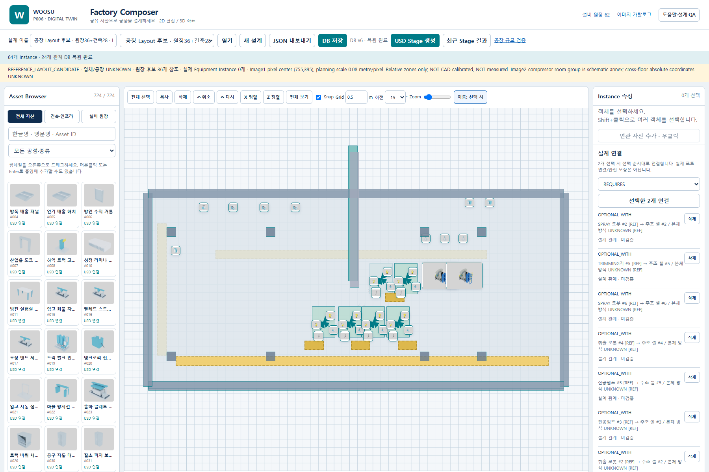
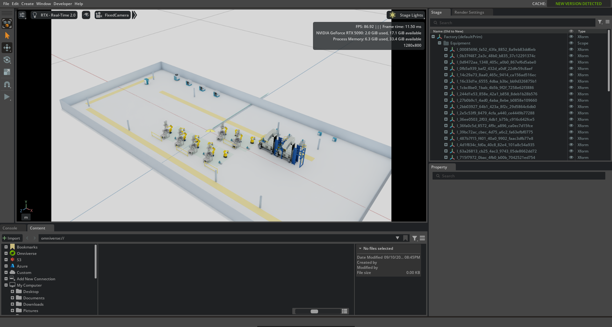

REFERENCE 공장 후보 · 업체/공장 UNKNOWN
실측 설계나 가동 가능한 주조 공장으로 승인한 결과가 아닙니다. 26개 BLOCKED 원장은 강제 매칭하지 않았습니다. 6개 주조 셀 표시는 구역이며 주조기 본체를 임의 제작한 것이 아닙니다.
1. 사람이 편집하는 업무 흐름
기존 PROJECT_ADMIN → 검색/분류 → 썸네일 드래그 → 이동/회전 → 연관 자산 → 바닥/벽/기둥 → 원장 후보 연결 → 저장 → 새로고침 → 재편집 → USD Export → Omniverse 재오픈
| 실행 기능 | 판정 | 입력 / 확인 결과 |
|---|
실제 Equipment Instance는 0개입니다. 원장 후보 연결만 검증했으며 실장비 등록·귀속·포트·안전 승인은 별도입니다.
2. 규모별 측정
| Instance | 초기 로딩 ms | 드래그 전→후 ms | 전체 재그리기 P95 ms | 저장 / 복원 ms | Stage 생성 s | USD KiB | Kit Open / Reopen s | Kit RSS MiB | 단일 프레임 FPS |
|---|
Chromium 실제 DOM/마우스, 각 규모 1회 저장/복원. 드래그는 마우스 12단계 전체 소요시간이며 1프레임 지연이 아닙니다. 전체 재그리기 20회 P95. Kit 로딩은 워밍업 상태에서 100프레임 안정화 포함, 콜드 스타트 제외. FPS는 1280×800 정지 화면의 단일 표시값이며 지속 이동 성능 보장이 아닙니다. RSS는 동일 Kit 세션의 누적 영향이 있습니다.
3. 실제 화면 검수


4. 배치 근거와 불확실성 — 객체별 조회
CHECK LIST.xlsx Sheet1 B3:B64 원문과 우수ams 네트워크.pptx 이미지의 상대 구역을 참조했습니다. 0.08m/pixel은 미검정 계획 축척입니다. 개별 배치 간격, 건축 형상 및 유틸리티 경로는 REFERENCE 제안입니다.
| 객체 / Asset ID | 원장 참조 | 위치 XYZ / 회전 | 배치 근거 | 검증 / 상태 |
|---|
5. 결과·도움말·다음 업무
원씽: 공장 규모의 편집·저장·Stage 재현 체인 검증. 카탈로그 READY/REAL과 Layout 재현 검증은 서로 다른 상태입니다.
깨달음: 객체 수 자체보다 전체 DOM 재생성과 반복 USD 검증이 비용을 만듭니다. 다음 바위는 Canvas 가시영역 렌더링과 Entry/Base 검증 캐시입니다. 3D 웹 뷰어·양방향 동기화보다 먼저 적용합니다.